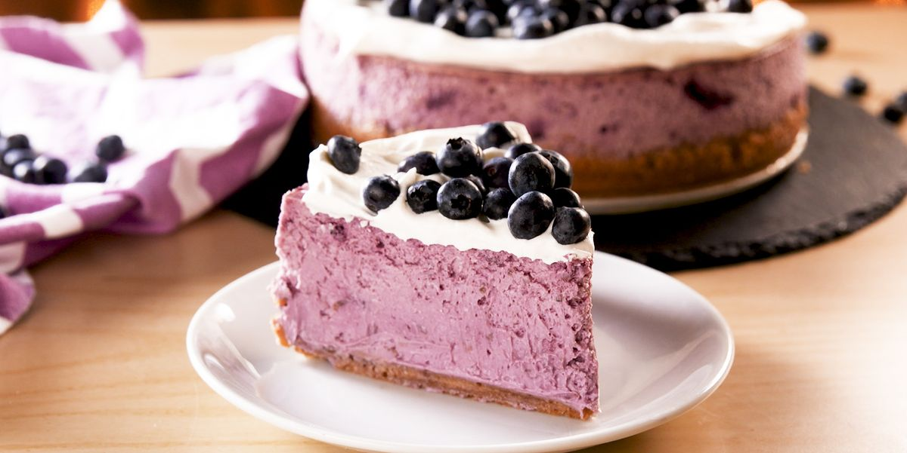

Cheesecake

Description
Swirling blueberry puree into cheesecake batter isn't only beautiful, it's extremely delicious. The cheesecake stays extra-creamy and has the perfect tartness to it that will have you saying, "just one more bite," another thousand times. It's the perfect ending to an outdoor dinner and though the cheesecake is just as rich the fresh fruit brings a welcome brightness to it making it one of our favorite summer desserts.
Ingredients
For the Blueberry Puree
- 2 c. blueberries
- 2 tbsp. granulated sugar
- 2 tsp. lemon juice
For the Crust
- 9 graham crackers, finely crushed (about 1 1/4 c.)
- 5 tbsp. butter, melted
- 1/4 c. granulated sugar
For the Cheesecake
- 4 (8-oz.) blocks cream cheese, softened
- 1 c. granulated sugar
- 2 large eggs
- 1 tsp. pure vanilla extract
- 1/4 c. sour cream
- 2 tbsp. all-purpose flour
- 1/4 tsp. kosher salt
- 1 c. blueberry puree
For Toppings
- Whipped cream
- Blueberries
Directions
- Preheat oven to 325°. In a small food processor, blend blueberries until no large chunks remain.
- In a small saucepan over medium heat, add blueberry puree, sugar, and lemon juice. Bring to a boil, then reduce heat and let simmer until slightly reduced, stirring occasionally, 10 minutes. Let cool to room temperature.
- Make crust: In a large bowl, mix together graham cracker crumbs, melted butter, and sugar, until mixture resembles wet sand. Press into bottom and up sides of an 8" or 9" springform pan.
- Make cheesecake: In a large bowl using a hand mixer (or in the bowl of a stand mixer), beat cream cheese and sugar until no lumps remain. Add eggs, one at a time, then stir in vanilla and sour cream. Add flour and salt and beat until just combined. Fold in blueberry puree.
- Pour mixture over crust. Wrap bottom of pan in aluminum foil and place in a large roasting pan. Pour in enough boiling water to come halfway up the baking pan.
- Bake until center of cheesecake only slightly jiggles, about 1 hour 30 minutes. Turn off heat, prop open oven door, and let cheesecake cool in oven, 1 hour.
- Remove foil and refrigerate cheesecake until completely chilled, at least 5 hours and up to overnight.
- When ready to serve, top cheesecake with whipped cream and blueberries.